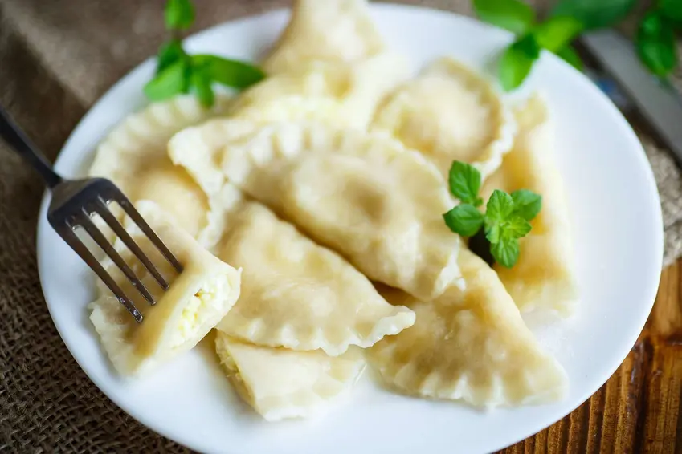

Pierogi with Cottage Cheese (Polish Dumplings)

Dumplings with cottage cheese are a great proposition for a delicious sweet dinner for the whole family.
Pierogi can also be served with fresh or frozen fruit.
Ingredients
- Wheat flour 500 g
- cottage cheese 300 g
- sour cream 30% fat 100 g
- Sugar 200 g
- Butter 200 g
- 2 Eggs
Directions
- Sift wheat flour into a bowl, pour warm water and knead a smooth dough.
- Leave for 30 minutes.
- Put the cottage cheese in a bowl, add sugar, sour cream and eggs, mix thoroughly.
- Roll out the dough to a thickness of 0.5 cm and cut circles with the pastry edge.
- Place a spoonful of curd filling on each piece of dough and seal the edges.
- Boil water in a pot and cook dumplings in batches until they float.
- This should take about 5-6 minutes.
- Serve the dumplings on a plate with the addition of butter and gingerbread spices.